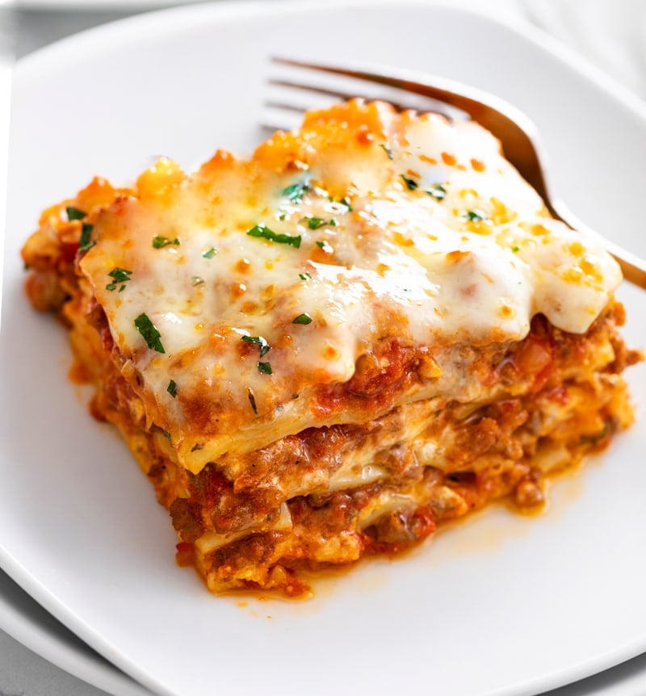

Lasagna

Lovely Layers
Picture this: a quiet Tuesday evening, the kind where the universe seems to be politely nudging you to eat a boring salad. But no! My taste buds had bigger dreams—dreams of layered magnificence, saucy seduction, and cheesy bliss. As I was casually scrolling through the culinary jungle of the internet, dodging recipes that looked like they were trying too hard to be quinoa, this lasagna recipe appeared, shining brighter than a mozzarella-stuffed lighthouse in a stormy sea of mediocre pasta dishes.
I didn't just fall in love with this lasagna; I was swept off my feet like a cartoon character following the aroma of a freshly baked pie. It was love at first bite, with noodles so perfectly cooked they must've been trained in a spa. The ricotta whispered sweet nothings, while the meat sauce sang me a love ballad that would put Barry White to shame.
In short, this lasagna wasn’t just a dish; it was the rom-com of my kitchen, and I was the lead who finally found "the one"—only this time, it was made of pasta, and our happily ever after came with a side of garlic bread.
Ingredients
- 12 lasagna noodles
- 1 pound ground beef
- 1 pound Italian sausage
- 2 cloves garlic, minced
- 1 medium onion, chopped
- 1 (28-ounce) can crushed tomatoes
- 2 (6-ounce) cans tomato paste
- 2 (6.5-ounce) cans tomato sauce
- 1/2 cup water
- 2 tablespoons white sugar
- 1 tablespoon dried basil leaves
- 1/2 teaspoon fennel seeds
- 1 teaspoon Italian seasoning
- 1 tablespoon salt, divided
- 1/4 teaspoon ground black pepper
- 4 tablespoons chopped fresh parsley, divided
- 12 ounces ricotta cheese
- 1 egg
- 3/4 teaspoon dried oregano
- 3/4 teaspoon dried thyme
- 3/4 teaspoon dried marjoram
- 3 cups shredded mozzarella cheese
- 3/4 cup grated Parmesan cheese
Steps
- Preheat your oven to 375F (190C).
- Bring a large pot of lightly salted water to a boil. Cook the lasagna noodles in boiling water for 8 to 10 minutes. Drain and rinse with cold water. Set aside.
-
In a large skillet, cook the ground beef, Italian sausage, chopped onion, and minced garlic over medium heat until well browned. Drain any excess fat.
- Stir in the crushed tomatoes, tomato paste, tomato sauce, and water.
- Mix in the white sugar, dried basil leaves, fennel seeds, Italian seasoning, 1 tablespoon of salt, and ground black pepper.
- Reduce the heat and simmer the sauce for 30 minutes, stirring occasionally.
-
In a mixing bowl, combine the ricotta cheese with the egg, 2 tablespoons of chopped fresh parsley, dried oregano, dried thyme, dried marjoram, and a pinch of salt. Mix until well combined.
-
Assemble the lasagna:
- Spread 1 1/2 cups of the meat sauce in the bottom of a 9x13-inch baking dish.
- Place 4 lasagna noodles over the sauce, slightly overlapping them.
- Spread one-third of the ricotta mixture over the noodles. Sprinkle with one-third of the shredded mozzarella cheese and one-third of the grated Parmesan cheese.
- Repeat layers by adding another 1 1/2 cups of meat sauce, 4 lasagna noodles, another third of the ricotta mixture, mozzarella, and Parmesan. Repeat this two more times.
- Finish with a final layer of noodles, topped with the remaining sauce and cheeses.
-
Cover the lasagna with aluminum foil, ensuring it doesn't touch the cheese to avoid sticking.
- Bake in the preheated oven for 25 minutes.
- Remove the foil and bake for an additional 25 minutes, until the top is lightly browned and the cheese is bubbling.
- Once cooked, remove the lasagna from the oven and let it rest for about 15 minutes to set.
- Garnish with the remaining chopped parsley before serving.